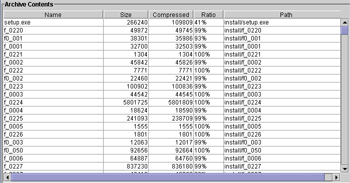

Before you can extract, view, add, or remove files in an archive, you must open it.
| 1. Click File -> Open from the File menu. | |
| 2. A dialog box will appear. Browse to the archive file you wish to open. Double-click the filename or click Open. | |
|  | 3. When the file is opened, the contents view will list all the files in the archive. You may now perform other operations on the files in the archive. |